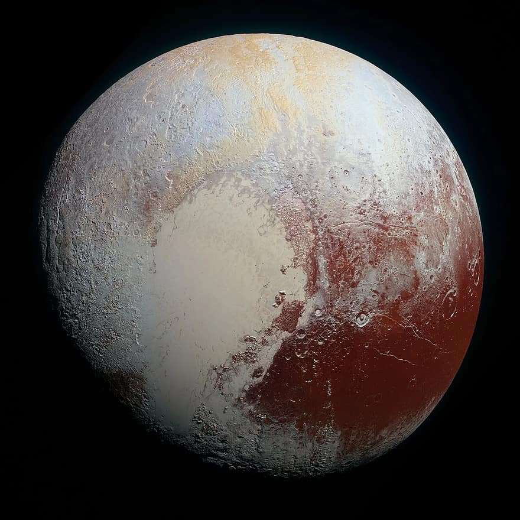

نظرة عامة
بلوتو هو كوكب قزم يقع في حزام كايبر، وقد تم اعتباره الكوكب التاسع في النظام الشمسي حتى عام 2006. يتميز بسطحه الجليدي وجوّه الرقيق.
خصائص بلوتو
- القطر: حوالي 2,377 كم
- مدة اليوم: حوالي 6.4 يوم أرضي
- مدة السنة: حوالي 248 سنة أرضية
- درجة الحرارة: تصل إلى -229 درجة مئوية
معرض الصور
صورة لكوكب بلوتو مع تضاريسه الجليدية.